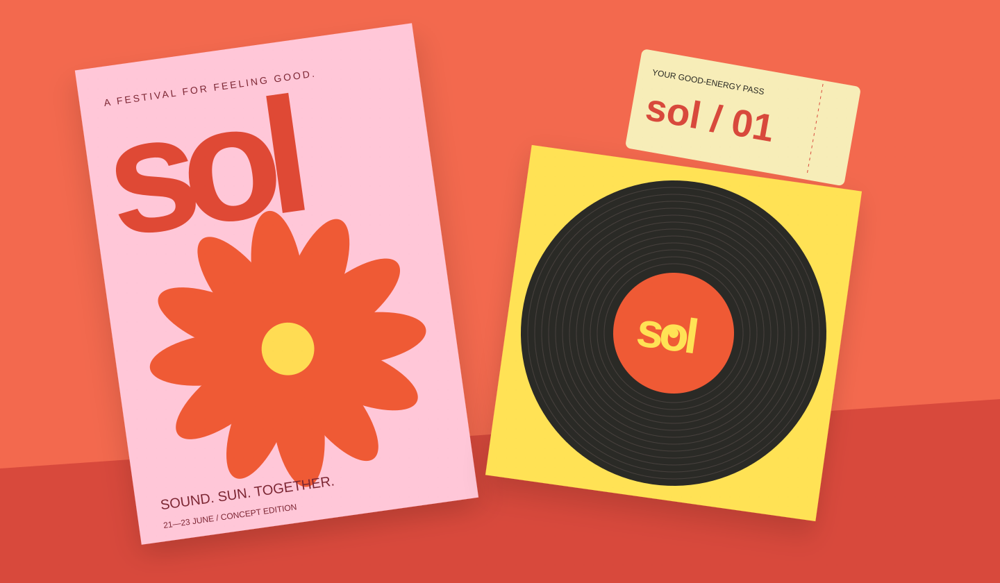
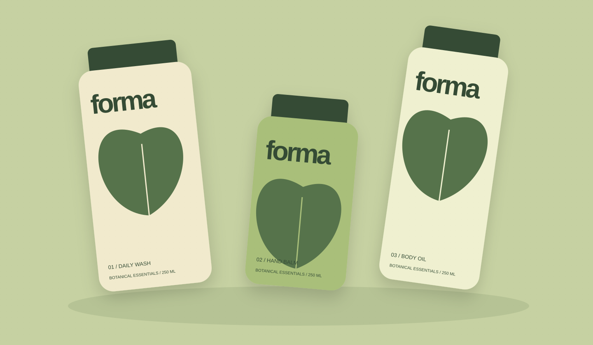
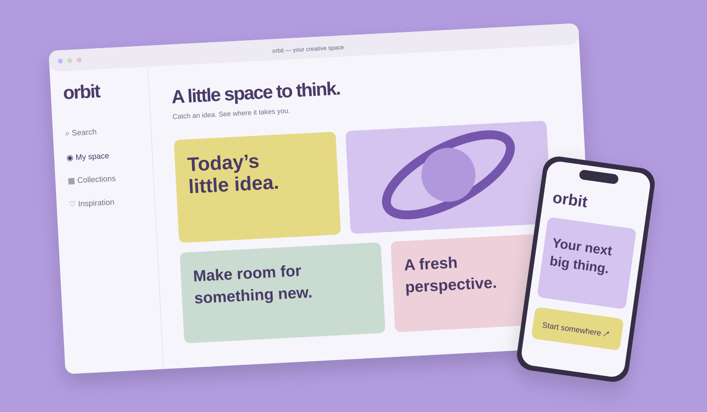
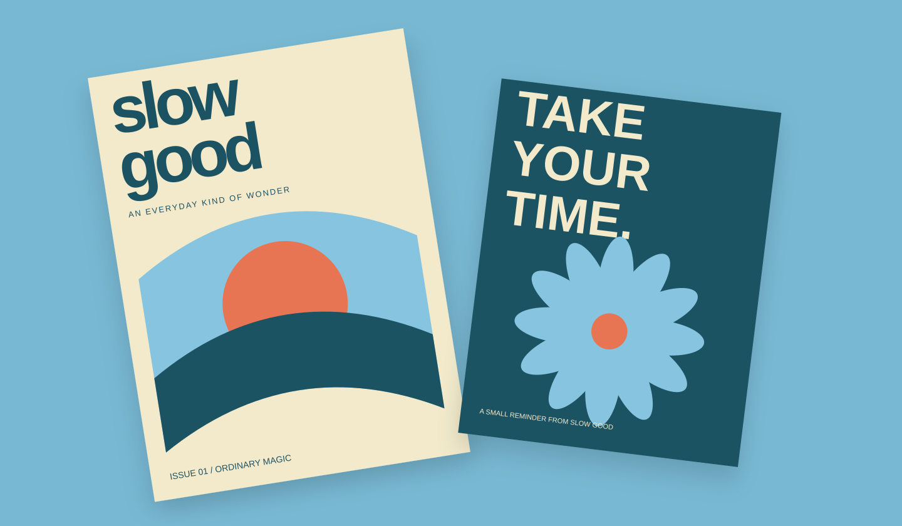

SOL
Good energy.
Great company.
A sunny new identity for a music and culture festival. Made to bring people together.
View case study ↗
Four self-initiated concepts. A little brand, a little digital, a lot of possibility.
← Back to homeSOL
A sunny new identity for a music and culture festival. Made to bring people together.
View case study ↗
FORMA
An earthy, expressive packaging world for an everyday botanical collection.
View case study ↗
ORBIT
A playful digital space for collecting ideas and turning them into something real.
View case study ↗
SLOW GOOD
An independent editorial concept celebrating the beauty hiding in ordinary moments.
View case study ↗